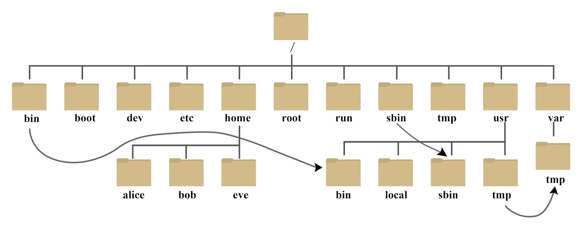
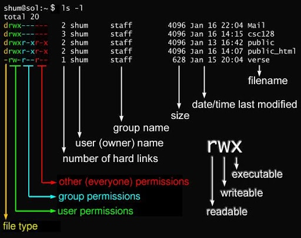

Linux基本总结
系统简介
Linux 或 Unix 系统中，所有的文件和目录都被组织成以一个根节点开始的倒置的树状结构

Linux 系统是一种典型的多用户系统，不同的用户处于不同的地位，拥有不同的权限。
文件与目录管理命令
cd 切换目录 (change directory)
cd
cd ~ //切换到/root 这个目录
cd .. //到目前的上一级目录
ls 列出目录及文件名 (list files)
ls
ls -a //全部的文件，连同隐藏文件( 开头为 . 的文件) 一起列出来
ls -d //仅列出目录本身，而不是列出目录内的文件数据
ls -l //长数据串列出，包含文件的属性与权限等等数据
du 查看文件大小
du dir
du ~/Desktop
pwd 显示目前的目录 (print work directory)
pwd
pwd -P //显示出确实的路径，而非使用连结 (link) 路径
mkdir 创建一个新的目录(make directory)
mkdir
mkdir -p // 递归创建上级目录
rmdir 删除一个空的目录(remove directory)
rmdir
rmdir -p // 从该目录起，一次删除多级空目录
cp 复制文件或目录(copy file)
cp 源目录 目标目录
rm 删除文件或目录(remove)
rm 文件或目录
rm -f //就是 force 的意思，忽略不存在的文件，不会出现警告信息
rm -r //递归删除 常用在目录的删除, 非常危险, 谨慎使用
rm -i //在删除前会询问使用者是否动作, 推荐使用
mv 移动文件与目录(move file)
mv 源目录 目标目录
文件内容查看命令
cat 由第一行开始显示文件内容
cat
cat ~/.bash_profile
-b ：列出行号，仅针对非空白行做行号显示，空白行不标行号！
-E ：将结尾的断行字节 $ 显示出来；
-n ：列印出行号，连同空白行也会有行号，与 -b 的选项不同；
-T ：将 [tab] 按键以 ^I 显示出来；
-v ：列出一些看不出来的特殊字符
head 取出文件前面几行
head
-n ：后面接数字，代表显示几行的意思
head -n 100 ~/.bash_profile
tail 取出文件后面几行
tail
# -n ：后面接数字，代表显示几行的意思
tail -n 100 ~/.bash_profile
文件基本属性
ls 显示文件的属性以及文件所属的用户和组
ls
-d 是目录
-l 表示为链接文档(link file)
执行ls - l时会显示文件的详细信息， rwx 的三个参数的组合
r代表可读(read)w代表可写(write)x代表可执行(execute)。要注意的是，这三个权限的位置不会改变，如果没有权限，就会出现减号
-
chown 修改所属用户与组(change owner)
在Linux系统中，用户是按组分类的，一个用户属于一个或多个组
对于文件来说，它都有一个特定的所有者，也就是对该文件具有所有权的用户
文件所有者以外的用户又可以分为文件所有者的同组用户和其他用户
按文件所有者、文件所有者同组用户和其他用户来规定了不同的文件访问权限
chown 所属用户名 文件名
chown root upload.sh
chomd 修改用户的权限(change mode)
文件属性有两种设置方法，一种是数字，一种是符号
文件的基本权限就有九个，分别是 owner/group/others(拥有者/组/其他) 三种身份各有自己的 read/write/execute 权限
文件的权限字符为： -rwxrwxrwx ， 这九个权限是三个三个一组的！其中，我们可以使用数字来代表各个权限
- r :4
- w :2
- x :1
每种身份(owner/group/others)各自的三个权限(r/w/x)分数是需要累加的，例如当权限为： rwxrwx--- 分数则是：
owner = rwx = 4+2+1 = 7group = rwx = 4+2+1 = 7others= --- = 0+0+0 = 0
我们设定权限的变更时，该文件的权限数字就是 770
chmod [-R] xyz 文件或目录
# -R : 进行递归(recursive)的持续变更，同目录下的所有文件都会变更
# xyz : 数字类型的权限属性，为 rwx 属性数值的相加
777 就是给文件所有的权限
ssh 远程登录
Linux 系统中是通过 ssh 服务实现的远程登录功能，默认 ssh 服务端口号为 22
ssh -p port user@ip
ssh -p 22 root@127.0.0.1
port是端口
user是服务器用户名
ip 是服务器地址
系统管理相关
who 查看当前在线
用于显示系统中有哪些使用者正在上面，显示的资料包含了使用者 ID、使用的终端机, 上线时间、呆滞时间、CPU 使用量、动作等等
who
-H 显示各栏位的标题信息列
ps 显示当前进程的状态
ps
-A 列出所有的进程
-w 显示加宽可以显示较多的资讯
-u root # 显示root进程用户信息
-ef # 显示所有命令，连带命令行
ps -ef | grep 进程关键字 # 查找指定进程格式